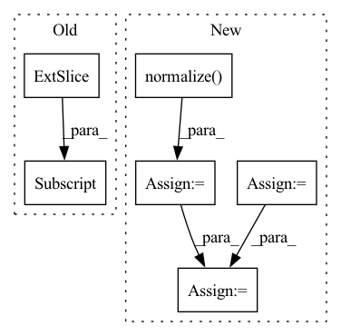

Pattern ID :29103

Before Change
rgb = cm.hsv(angles_normalized)[:, :-1] // hsv is cyclic
magnitude = np.sqrt(np.sum(flows**2, axis=1))
magnitude /= magnitude.max()
return rgb * magnitude[:, np.newaxis]
def update_scan(self):
// first open data
After Change
// https://stackoverflow.com/questions/28898346/visualize-optical-flow-with-color-model
// Use Hue, Saturation, Value colour model
hsv = np.zeros((flows.shape[0], 1, 3), dtype=np.uint8)
hsv[..., 1] = 255
mag, ang = cv2.cartToPolar(flows[..., 0], flows[..., 1])
hsv[..., 0] = ang * 180 / np.pi / 2
hsv[..., 2] = cv2.normalize(mag, None, 0, 255, cv2.NORM_MINMAX)
rgb = cv2.cvtColor(hsv, cv2.COLOR_HSV2RGB)
rgb = rgb[:, 0, :] / 255. // Normalize to 1
rgb[rgb < 0.2] = 0.2 // Just for visualize not moving points
In pattern: SUPERPATTERN
Frequency: 3
Non-data size: 6
Instances
Fragment ID: 85787935
Project Name: jabb0/fastflow3d
Commit Name: ef8013b20d8d6b8f7090a5d6ba114bc64617682c
Time: 2021-07-07
Author: carlosmn1997@gmail.com
File Name: visualization/laserscanvis.py
M Class Name: LaserScanVis
N Class Name: LaserScanVis
M Method Name: flow_to_rgb(2)
N Method Name: flow_to_rgb(2)
M Parent Class:
N Parent Class:
M File Name: visualization/laserscanvis.py
N File Name: visualization/laserscanvis.py
M Start Line: 86
M End Line: 92
N Start Line: 82
N End Line: 93
'>
Before Change
scene_2 = self.convScene_2(scene_1)
for i in range(dim_batch):
weight_read[i] = self.similarity(self.memory_past, state_past[:, i]).unsqueeze(0)
// weight_read[torch.arange(dim_batch)] = self.similarity(self.memory_past, state_past[:,torch.arange(dim_batch)]).unsqueeze(0)
index_max = torch.sort(weight_read, descending=True)[1].cpu()
After Change
scene_2 = self.convScene_2(scene_1)
// Cosine similarity
past_normalized = F.normalize(self.memory_past, p=2, dim=1)
state_normalized = F.normalize(state_past.squeeze(), p=2, dim=1)
weight_read = torch.matmul(past_normalized, state_normalized.transpose(0,1)).transpose(0,1)
index_max = torch.sort(weight_read, descending=True)[1].cpu()
'>
Fragment ID: 85787950
Project Name: marchetz/mantra-cvpr20
Commit Name: 433bba3b3cf57d5cf7723c46a7fcfd17c1bac858
Time: 2019-07-28
Author: fede.becat@gmail.com
File Name: models/model_memory_single.py
M Class Name: model_memory_single
N Class Name: model_memory_single
M Method Name: forward(3)
N Method Name: forward(3)
M Parent Class: nn.Module
N Parent Class: nn.Module
M File Name: models/model_memory_single.py
N File Name: models/model_memory_single.py
M Start Line: 118
M End Line: 139
N Start Line: 134
N End Line: 136
'>
Before Change
def forward(self, user, item):
user = torch.from_numpy(self.interaction_matrix[user.cpu()].todense()).to(self.device)
item = torch.from_numpy(self.interaction_matrix[:, item.cpu()].todense()).to(self.device).t()
user = self.user_linear(user)
item = self.item_linear(item)
After Change
user = self.user_fc_layers(user)
item = self.item_fc_layers(item)
user = F.normalize(user, p=2, dim=1) // after normalize the vector, cosine distance reduced to dot product.
item = F.normalize(item, p=2, dim=1)
vector = torch.mul(user, item).sum(dim=1)
vector = torch.max(vector, self.min_y_hat) // restrict the result to [0, 1].
return vector
'>
Fragment ID: 85787946
Project Name: rucaibox/recbole
Commit Name: a63051c31f6cacc489710809995b2610a52b96d6
Time: 2020-09-17
Author: 893833413@qq.com
File Name: recbox/model/general_recommender/dmf.py
M Class Name: DMF
N Class Name: DMF
M Method Name: forward(3)
N Method Name: forward(3)
M Parent Class: GeneralRecommender
N Parent Class: GeneralRecommender
M File Name: recbox/model/general_recommender/dmf.py
N File Name: recbox/model/general_recommender/dmf.py
M Start Line: 73
M End Line: 82
N Start Line: 90
N End Line: 106